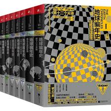

📖《地球编年史》是撒迦利亚·西琴的代表作，试图从外星文明的角度解读地球古代历史。作者将考古发现与古代神话相结合，提出了一系列大胆的假说。
从西方人的角度看神奇的地球古代历史，基本是外星人的故事。很难讲到底可信不可信，但是写得煞有介事，逻辑自洽。算是西方人的山海经吧。
西琴的论证虽然颇具争议，但他确实引用了大量考古资料，从苏美尔文明到埃及金字塔，从玛雅历法到圣经记载，构建了一个完整的外星干预论体系。无论你是否相信他的结论，这本书都提供了一种全新的视角来看待人类历史。与中国的山海经对照阅读，会发现东西方对"上古奇谈"的不同诠释方式，非常有趣。